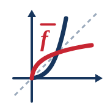

Klasse 10 · Emil-Petri-Schule Arnstadt
Schwarz: f(x) Rot: f̅(x) Grau gestrichelt: Symmetrieachse (y = x)
Gib bitte den Funktionsterm ein.
Bitte statt des Bruchstrichs das Divisionszeichen ÷ verwenden.
Bestimme den Definitionsbereich der Umkehrfunktion.
Wähle eine Schreibweise:
Intervallschreibweise:
Mengenschreibweise:
Schwarz: Ausgangsfunktion f(x) Rot: Umkehrfunktion f̅(x) Grau gestrichelt: y = x
Eine Umkehrfunktion macht die Zuordnung rückgängig. Vorgehen:
Beispiel: y = 2x + 3 → x = 2y + 3 → y = (x − 3)/2. Also f̅(x) = x − 32.
Achtung: Potenzfunktionen mit geraden Exponenten sind auf ganz ℝ nicht umkehrbar. Sie haben einen positiven und einen negativen Ast.Beispiel: f(x)=x². Mit D=[0;∞) gilt f̅(x)=√x. Für D=(-∞;0] gilt f̅(x)=−√x.Der Definitionsbereich der Umkehrfunktion ist der Wertebereich von f(x).